항공산업기사 (2005-03-06 기출문제)
1과목: 항공역학
1. 비행기 무게가 6,000kgf이고, 경사각 60°의 정상선회를 하고 있을 때, 이 비행기의 원심력은 얼마인가?
- 10,392 kgf
- 10,676 kgf
- 12,176 kgf
- 13,126 kgf
(정답률: 69%)

2. 필요마력에 대한 설명으로 가장 올바른 것은?
- 고도가 높을 수록 밀도가 증가하여 필요마력은 커진다.
- 날개하중이 작을 수록 필요마력은 커진다.
- 항력계수가 작을 수록 필요마력은 작다.
- 속도가 작을 수록 필요마력은 크다.
(정답률: 65%)
3. 프로펠러가 항공기에 준 동력으로 가장 올바른 것은?
- 추력/비행속도
- 추력 × 비행속도
- 추력 × 비행속도2/3
- 추력 × 비행속도2
(정답률: 70%)
4. 조종면의 폭이 2배가 되면 조종력은 몇배가 되어야 하는가?
- 1/2배
- 변함 없음
- 2배
- 4배
(정답률: 53%)
5. 헬리콥터가 Hovering 할 때의 관계식으로 맞는 것은?
- 헬리콥터 무게＜양력
- 헬리콥터 무게=양력
- 헬리콥터 무게＞양력
- 헬리콥터 무게=양력+원심력
(정답률: 79%)
6. 헬리콥터의 양력분포 불균형을 해결하는 방법으로 가장 올바른 것은?
- 전진하는 깃과 후퇴하는 깃의 받음각을 같게 한다.
- 전진하는 깃과 뒤로 후퇴하는 깃의 피치각을 동시에 증가시킨다.
- 전진하는 깃의 피치각은 감소시키고 뒤로 후퇴하는 깃의 피치각은 증가시킨다.
- 전진하는 깃의 피치각은 증가시키고 뒤로 후퇴하는 깃의 피치각은 감소시킨다.
(정답률: 73%)
7. 무게1,000kgf의 비행기가 7,000m 상공(ρ=0.06kgfㆍS2/m4)에서 급강하 하고 있다. 항력계수 CD=0.1 이고, 날개 하중은 30kgf/m2이다. 이때의 급강하 속도는 얼마인가?
- 100m/s
- 100√3
- 200m/s
- 100√5m/s
(정답률: 63%)
8. 방향키 부유각(float angle)이란?
- 방향키를 밀었을 때 공기력에 의해 방향키가 변위 되는각
- 방향키를 당겼을 때 공기력에 의해 방향키가 변위 되는 각
- 방향키를 고정했을 때 공기력에 의해 방향키가 변위 되는 각
- 방향키를 자유로 했을 때 공기력에 의해 방향키가 자유로이 변위되는 각
(정답률: 89%)
9. 비행기가 평형 상태에서 이탈된 후, 그 변화의 진폭이 시간의 경과에 따라 증가하는 경우에 이를 가장 올바르게 설명한 것은?
- 정적으로 불안정하다.
- 동적으로 불안정하다.
- 정적으로는 불안정하지만, 동적으로는 안정하다.
- 정적으로도 안정하고, 동적으로도 안정하다.
(정답률: 75%)
10. 항공기 이륙거리를 짧게하기 위한 설명 내용으로 가장 올바른 것은?
- 항공기 무게와는 관계 없다.
- 배풍(TAIL WIND)을 받으면서 이륙한다.
- 이륙시 플랩이 항력증가의 요인이 되므로 플랩을 사용하지 않는다.
- 기관의 추력을 가능한 최대가 되도록 한다.
(정답률: 87%)
11. 항공기의 날개에서 발생하는 양력으로 인하여 압력항력이 발생하는데, 이것을 무슨 항력이라 하는가?
- 유도항력
- 조파항력
- 표면 마찰항력
- 형상압력
(정답률: 67%)
12. 프로펠러의 기하학적 피치비(geometric pitch ratio)를 가장 올바르게 정의한 것은?
- 기하학적 피치 / 프로펠러 반지름
- 프로펠러 반지름 / 기하학적 피치
- 기하학적 피치 / 프로펠러 지름
- 프로펠러 지름 / 기하학적 피치
(정답률: 67%)
13. 선회(Turns)비행시 외측으로 Slip하는 가장 큰 이유는 무엇인가?
- 경사각이 작고 구심력이 원심력보다 클 때
- 경사각이 크고 구심력이 원심력보다 작을 때
- 경사각이 크고 원심력이 구심력보다 작을 때
- 경사각은 작고 원심력이 구심력보다 클 때
(정답률: 66%)
14. NACA 23015의 에어포일에서 최대캠버의 위치는?
- 15%
- 20%
- 23%
- 30%
(정답률: 80%)
15. 피치 업(pitch up) 현상의 원인이 아닌 것은?
- 뒤젖힘 날개의 날개 끝 실속
- 뒤젖힘 날개의 비틀림
- 받음각의 감소
- 날개의 풍압 중심이 앞으로 이동
(정답률: 70%)
16. 다음 중 가로세로비로서 가장 올바른 것은? (단, s = 날개면적, b = 날개길이, c = 시위)
- s/b2
- b2/c
- b2/s
- c/b
(정답률: 83%)
17. 차등 도움날개를 가장 올바르게 설명한 것은?
- 좌·우측 도움날개의 위치를 비대칭으로 한다.
- 좌·우측 도움날개의 작동속도를 다르게 한다.
- 도움날개의 올림각과 내림각을 다르게 한다.
- 좌·우측 도움날개의 면적을 다르게 한다.
(정답률: 64%)
18. 공기의 점성효과에 대한 설명내용으로 가장 올바른 것은?
- 점성력은 속도(V),면적(S),점성계수μ에 반비례하고 경계층 두께에 비례한다.
- 비행하는 물체에 작용하는 점성력의 특성을 가장 잘 나타내는 식은 베르누이 정리이다.
- 동점성 계수ν는 밀도ρ를 점성계수μ로 나눈값이다.
- 점성은 일반적으로 온도에 따라 그 값이 변한다.
(정답률: 56%)
19. 지름이 20㎝와 30㎝로 된 관이 서로 연결되어 있다. 지름 20㎝ 관에서의 속도가 2.4m/sec일 때 30㎝관에서의 속도(m/sec)는 얼마인가?
- 0.19
- 1.07
- 1.74
- 1.98
(정답률: 63%)
20. 프로펠러 효율에 대한 설명 중 가장 거리가 먼 것은?
- 추력에 비례한다.
- 비행속도에 비례한다.
- 진행율에 반비례한다.
- 축동력에 반비례한다.
(정답률: 62%)
2과목: 항공기관
21. 섭씨온도=Tc, 화씨온도=TF 로 표시할 때 화씨온도를 섭씨 온도로 환산하는 관계식 중 옳은 것은?
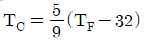
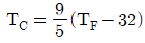
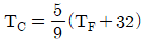
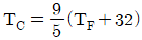
(정답률: 60%)
22. 왕복기관의 마그네토 브레이커 포인트(breaker point)가 과도하게 소실되었다. 다음 중 어떤 것을 교환해 주어야 하는가?
- 1차 코일
- 2차 코일
- 배전반 접점
- 콘덴서(condenser)
(정답률: 85%)
23. 가스터빈 기관의 배기계통 중 배기파이프(Exhaust Pipe) 또는 테일파이프라고도 하며 터빈을 통과한 배기가스를 대기중으로 방출하기위한 통로 역할을 하는 것은?
- 배기 덕트
- 고정 면적 노즐
- 배기 소음방지 장치
- 역추력 장치
(정답률: 89%)
24. 기하학적 피치(Geometrical Pitch)란?
- 프로펠러를 1바퀴 회전시켜 실제로 전진한 거리
- 프로펠러를 2바퀴 회전시켜 전진할 수 있는 이론적인 거리
- 프로펠러를 2바퀴 회전시켜 실제로 전진한 거리
- 프로펠러를 1바퀴 회전시켜 프로펠러가 앞으로 전진 할 수 있는 이론적인 거리
(정답률: 82%)
25. 항공기 엔진의 부자식 기화기에서 이코노마이저(economizer)밸브의 가장 큰 목적은?
- 분사계통(injection system)에 들어가는 연료의 양을 감소시켜준다.
- 엔진의 순간적 가속에 따른 추가연료를 공급한다.
- 고출력시 농후혼합비를 제공한다.
- 최상의 순항출력동안 희박혼합비 지속을 가능하게 한다.
(정답률: 67%)
26. 왕복기관의 크랭크축에 일반적으로 사용되는 베어링은?
- 평형(plain)베어링
- 로울러(roller)베어링
- 볼(ball)베어링
- 니들(needle)베어링
(정답률: 59%)
27. 어떤 기관의 피스톤 지름이 150㎜, 행정길이가 0.16m 실린더수가 4, 제동평균 유효압력이 8kg/㎝2, 회전수가 2400rpm 일 때의 제동마력(㎰)은 얼마인가?
- 261.1
- 251.1
- 241.1
- 231.1
(정답률: 47%)
28. 기관 조절(engine trimming)을 하는 가장 큰 이유는?
- 정비를 편리하도록
- 비행의 안정성을 위해
- 기관 정격 추력을 유지하기 위해
- 이륙 추력을 크게하기 위해
(정답률: 78%)
29. 다음은 오토 사이클의 P - V선도이다. 3-4 과정은?
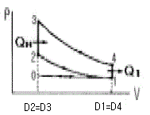
- 단열팽창
- 단열압축
- 정적수열
- 정적방열
(정답률: 73%)
30. 왕복기관에서 밸브간격이 과도하게 클 경우 가장 올바르게 설명한 것은?
- 밸브 오버랩(overlap)증가
- 밸브 오버랩(overlap)감소
- 밸브의 수명 증가
- 밸브 오버랩(overlap)에 영향을 미치지 않는다.
(정답률: 61%)
31. 연료의 퍼포먼스 수(Performance number) 115란 무엇을 의미하는가?
- 옥탄가 100의 연료를 사용할 때 보다 4에칠연을 첨가하여 기관의 출력을 15% 증가하여 노크현상을 일으키지 않는 연료
- 옥탄가 100의 연료에 질량비로서 4에칠연을 15% 더 첨가한 연료
- 옥탄가 100의 연료에 체적비로서 4에칠연을 15% 더 첨가한 연료
- 옥탄가 115에 해당하는 내폭성을 갖는 연료
(정답률: 55%)
32. 속도 540km/h 로 비행하는 항공기에 장착된 터보 제트기관이 196kg/s인 중량유량의 공기를 흡입하여 250m/s의 속도로 배기시킨다. 총 추력은 얼마인가?
- 4000kg
- 5000kg
- 6000kg
- 7000kg
(정답률: 52%)
33. 피스톤 링은 연소실을 밀폐시키는 역할 이외에 어떤 역할을 하는가?
- 피스톤 핀(pin)을 윤활시킨다.
- 크랭크 케이스(case) 압력을 축소시킨다.
- 실린더가 헤드(head)로 너무 가까이 접근하는 것을 방지한다.
- 열분산을 돕는다.
(정답률: 60%)
34. 가스 터빈 기관(Turbine Engine)의 연소용 공기량은 연소실(Combustion chamber)을 통과하는 총 공기량의 몇 % 정도인가?
- 25
- 50
- 75
- 100
(정답률: 56%)
35. 제트엔진 후기연소기(after burner)의 역할을 가장 올바르게 설명한 것은?
- 엔진 열효율이 증가된다.
- 추력을 크게 할 수 있다.
- 착륙 때 사용한다.
- 여객기 엔진에 주로 장착된다.
(정답률: 80%)
36. 가스터빈 기관에서 압축기 스테이터 베인(stator vanes)의 가장 중요한 목적은?
- 배기가스의 압력을 증가시킨다.
- 배기가스의 속도를 증가시킨다.
- 공기흐름의 속도를 감소시킨다.
- 공기흐름의 압력을 감소시킨다.
(정답률: 50%)
37. 프로펠러를 장비한 경항공기에서 감속기어(Reductiongear)을 사용하는 가장 큰 이유는?
- 블레이드 길이를 짧게하기 위해
- 블레이드 Tip(끝)부분에서의 실속방지를 위해
- 연료 소모율을 감소시키기 위해
- 프로펠러 회전속도를 증가시키기 위해
(정답률: 80%)
38. 항공기 기관용 윤활유의 점도지수(Viscosity Index)가 높다는 것은 무엇을 뜻하는가?
- 온도변화에 따라 윤활유의 점도 변화가 적다.
- 온도변화에 따라 윤활유의 점도 변화가 크다.
- 압력변화에 따라 윤활유의 점도 변화가 적다.
- 압력변화에 따라 윤활유의 점도 변화가 크다.
(정답률: 74%)
39. 열역학적 성질(thermodynamic property)이 아닌 것은?
- 온도
- 압력
- 엔탈피(Enthalpy)
- 열
(정답률: 45%)
40. 브레이드 내부에 공기 통로를 설치하여 이곳으로 차가운 공기가 지나가게 함으로써 터빈 깃을 냉각하는 방법은?
- Film Cooling
- Convection Cooling
- Impingement Cooling
- Transpiration Cooling
(정답률: 58%)
3과목: 항공기체
41. 재료가 탄성한도에서 단위 체적에 저축되는 변형에너지를 최대 탄성에너지라고 부르는데, 다음에서 옳은 표시는? (단, σ:응력, E: 탄성계수)
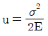
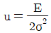
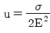
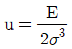
(정답률: 62%)
42. 기계적 확장 리벳(Mechanically expand rivet) 중에서 진동으로 리벳이 헐거워서 이탈되는 것을 방지하기 위하여 기계적 고정 칼라(Collar)를 갖고 있는 리벳은?
- 기계고정식 브라인드 리벳
- 마찰고정식 브라인드 리벳
- 리브 넛트
- 폭발 리벳
(정답률: 72%)
43. 그림과 같은 보를 무엇이라 하는가?
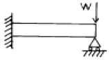
- 단순보
- 고정지지보
- 고정보
- 돌출보
(정답률: 80%)
44. ASTM의 기호표시로 마그네슘합금 AZ31A를 설명한 내용 중 가장 올바른 것은?
- 첫째자리 A는 주합금원소인 알루미늄을 말한다.
- Z는 이차 합금원소인 지르코늄을 말한다.
- 3은 지르코늄의 함량이 3%이다.
- 1은 단단한 정도를 표시한다.
(정답률: 60%)
45. 육각 볼트(BOLT)머리의 삼각형 속에 X가 새겨져 있다면, 이것은 어떤 볼트(BOLT)인가?
- 표준 볼트(STANDARD BOLT)
- 내식성 볼트
- 정밀공차 볼트
- 내부 렌칭 볼트
(정답률: 74%)
46. V-n선도에 대한 설명으로 가장 올바른 것은?
- 속도와 저항에 대한 하중과의 관계
- 양력계수와 하중계수와의 관계
- 비행기의 운용가능한 하중의 범위
- 비행속도와 항력계수와의 관계
(정답률: 65%)
47. 타이어(tire)가 과팽창하면 가장 큰 손상의 원인이 될 수 있는 것은?
- 허브프림(hub frim)
- 휠플렌지(wheel flange)
- 백프레이트(back plate)
- 브레이크(brakes)
(정답률: 76%)
48. 그림과 같이 하중이 작용하는 경우 항공기의 무게중심(C.G)을 MAC(%)로 나타내면?(단, MAC = 120in)
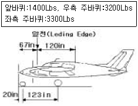
- 40% MAC
- 45.2% MAC
- 50% MAC
- 54.2% MAC
(정답률: 71%)
49. Turn Buckle의 검사방법에 대한 설명 중 가장 거리가 먼 내용은?
- 단선 결선법인 경우 턴버클의 죔이 적당한지 확인하는 방법은 나사산이 3-4개가 밖으로 나와 있는지를 본다.
- 이중결선법인 경우 Barrel의 검사 구멍에 pin이 들어가면 장착이 잘 되었다고 할 수 있다.
- 이중결선법인 경우에 케이블의 지름이 1/8in 이상인지를 확인한다.
- 단선결선법에서 턴버클 생크 주위로 와이어가 4회이상 감겼는지 확인한다.
(정답률: 70%)
50. 조종계통에서 벨 크랭크(BELL CRANK)의 주 역활은?
- 케이블(CABLE)과 로드(ROD)를 연결한다.
- 로-드(ROD)나 케이블(CABLE)의 운동방향을 전환한다.
- 풀리(PULLEY)를 장착하는데 사용한다.
- 풀리와 케이블을 직선으로 연결한다.
(정답률: 72%)
51. 다음 중 부식의 종류에 해당되지 않는 것은?
- 자장 부식
- 표면 부식
- 입자간 부식
- 응력 부식
(정답률: 86%)
52. 다음 비파괴검사법 중에서 큰하중을 받는 알루미늄 합금 구조물의 내부검사에 이용할 수 있는 검사법은?
- 다이체크 검사(dye penetrant inspection)
- 자이글로 검사(zyglo inspection)
- 자기탐상 검사(magnetic particle inspection)
- 방사선투과 검사(radiograph inspection)
(정답률: 75%)
53. AN 514 P 428-8 스크류에서 P가 뜻하는 것은?
- 계열
- 머리의 홈
- 지름
- 재질
(정답률: 70%)
54. 두께 0.⑤1인치의 판을 1/4인치 굴곡반경으로 90°굽힌다면 굴곡 허용량(Bend Allowance)은 얼마인가?
- 0.3423in
- 0.4328in
- 0.4523in
- 0.5328in
(정답률: 72%)
55. 듀랄루민으로 개발된 최초합금으로 Cu 4%, Mg 0.5%를 함유하며 현재는 주로 리벳으로 사용되는 것은?
- AA2014
- AA2017
- AA2024
- AA2224
(정답률: 51%)
56. 노스 스트럿트(Nose strut)내부에 있는 센터링 캠(Centering cam)의 작동 목적을 가장 올바르게 설명한 것은?
- 착륙후에 노스 휠(Nose wheel)을 중립으로 하여준다.
- 이륙후에 노스 휠을 중립으로 하여준다.
- 내부 피스톤에 묻은 오물을 제거해 준다.
- 노스 휠 스티어링(steering)이 작동하지 않을 때 중립위치로 하여준다.
(정답률: 58%)
57. 원형단면인 봉의 경우 비틀림에 의하여 단면에서 발생하는 비틀림각 읨를 나타낸 식은? (단, L : 봉의 길이, G : 전단탄성계수, R : 반지름, J : 극관성 모멘트, T : 비틀림 모멘트)
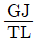
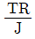
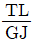
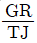
(정답률: 64%)
58. 용해된 이산화 규소의 가는 가닥으로 만들어진 섬유로서 전기절연성이 뛰어나고 내수성,내산성등 화학적 내구성이 좋으며, 가격도 저렴하지만 다른 강화섬유에 비해 기계적 성질이 낮아 2차 구조물에 사용되는 섬유는?
- 카본섬유
- 유리섬유
- 아라미드섬유
- 보론섬유
(정답률: 53%)
59. 모노코크(monocoque) 구조를 가장 올바르게 설명한 것은?
- 강관의 골격에 알루미늄 외피를 씌운구조
- 강관의 골격에 fabric을 씌운구조
- 금속외피, frame, stringer등의 강도 부재를 접합하여 만든 구조
- 외피로만 되어있서 구조의 하중을 외피가 담당하도록 한 구조
(정답률: 64%)
60. 항공기의 위치표시방식 중에서 기준으로 정한 특정 수평면으로부터의 위치를 측정한 수직거리는?
- FS(Fuselage Station)
- WS(Wing Station)
- BWL(Body Water Line)
- BBL(Body Buttock Line)
(정답률: 66%)
4과목: 항공장비
61. 직류 발전기의 보상권선(compensating winding)과 그 역할이 같은 것은?
- 보극(interpole)
- 직렬권선(series-winding)
- 병렬권선(shunt-winding)
- 회전자권선(armature coil)
(정답률: 64%)
62. 유압장치와 공압장치를 비교할 때 공압장치에서 필요 없는 부품은?
- check valve
- relief valve
- reducing valve
- accumulator
(정답률: 66%)
63. 납산 축전지에서 용량의 표시기호는?
- Ah
- Bh
- Vh
- Fh
(정답률: 76%)
64. 자기계기에서 불이차의 발생 원인으로 가장 올바른 것은?(오류 신고가 접수된 문제입니다. 반드시 정답과 해설을 확인하시기 바랍니다.)
- COMPASS의 중심선과 기축선이 서로 평행일 때
- MAGNETIC BAR의 축선과 COMPASS CARD의 남북선이 서로 일치할 때
- PIVOT와 LUBBER'S LINE을 연결한 선과 기축선이 서로 평행일 때
- COMPASS의 중심선과 기축선이 서로 평행하지 않을 때
(정답률: 20%)
65. 항공기의 기압식 고도계를 QNE 방식에 맞추면, 어떤 고도를 지시하는가?
- 기압고도
- 절대고도
- 진고도
- 밀도고도
(정답률: 63%)
66. 압력조절기와 비슷한 역할을 하지만 압력조절기 보다 약간 높게 조절되어 있어, 그 이상의 압력을 빼어주기 위한 장치는?
- check valve
- reservoir
- accumulator
- relief valve
(정답률: 64%)
67. 표류중에 위치를 알려주기 위한 긴급신호장치(EmergencySignal Equipment)가 아닌 것은?
- FM RADIO
- RADIO BEACON
- MEGAPHONE
- 백색광탄
(정답률: 55%)
68. HF 통신(Communication)의 용도로 가장 올바른 것은?
- 항공기 상호간 단거리 통신
- 항공기와 지상간의 단거리 통신
- 항공기 상호간 및 항공기와 지상간의 단거리 통신
- 항공기 상호간 및 항공기와 지상간의 장거리 통신
(정답률: 75%)
69. 집합계기의 장점이 아닌 것은?
- 필요한 정보를 필요할 때 지시하게 할 수 있다.
- 한 개의 정보를 여러개의 화면에 나타낼 수 있다.
- 다양한 정보를 도면을 이용하여 표시할 수 있다.
- 항공기 상태를 그림, 숫자로 표시할 수 있다.
(정답률: 59%)
70. Vapour cycle cooling system(freon)에서 air의 냉각은?
- 고온 고압의 freon gas가 cooling air에 의해 열을 빼앗겨 냉각된다.
- 액체 freon을 팽창시켜서 온도를 낮춘다.
- freon의 응축에 의하여 냉각 된다.
- 액체 freon이 cabin air의 열을 흡수하여 기화하므로서 냉각된다.
(정답률: 57%)
71. 대형 항공기 공압계통에서 공통 매니폴드(Manifold)에공급되는 공기 공급원의 종류와 가장 거리가 먼 것은?
- 전기 모터로 구동되는 압축기(Electric MotorCompressor)
- 터빈 엔진의 압축기(Compressor)
- 엔진으로 구동되는 압축기(Super Charger)
- 그라운드 뉴메틱 카트(Ground Pneumatic Cart)
(정답률: 61%)
72. 직류 전동기 중 변동률이 가장 심한 것은?
- 분권형
- 직권형
- 가동복권형
- 차동복권형
(정답률: 60%)
73. 작동유(Hydraulic fluid) 구비조건으로 가장 관계가 먼 것은?
- 점도가 높을 것
- 열전도율이 좋을 것
- 화학적 안정성이 좋을 것
- 부식성이 적을 것
(정답률: 74%)
74. Windshield의 제우장치로서 가장 거리가 먼 방법은?
- 화학물질을 분사하는 방법
- Window Wiper를 사용하는 방법
- 공기로 불어내는 방법
- 전열기를 사용하는 방법
(정답률: 60%)
75. 지자기의 요소 중 지자기 자력선의 방향과 수평선 간의 각을 의미하는 요소는?
- 편각
- 복각
- 수직분력
- 수평분력
(정답률: 66%)
76. 여압장치의 차압은 다음 어느 것에 의해 제한을 받는가?
- 인체의 내성
- 가압장치의 용량
- 객실내의 산소함유량
- 기체구조의 강도
(정답률: 63%)
77. 직류 발전기에서 잔류자기를 잃어 발전기 출력이 나오지 않을 경우 잔류자기를 회복할 수 있는 방법으로 가장 올바른 것은?
- 잔류자기가 회복될 때까지 반대방향으로 회전시킨다.
- 계자권선에 직류전원을 공급한다.
- Field Coil을 교환한다.
- 잔류자기가 회복될 때까지 고속 회전시킨다.
(정답률: 72%)
78. 항공기에 사용되는 액량계기의 형식에 대한 설명 내용 중 틀린 것은?
- 직독식 액량계는 사이트 글라스(sight glass)에 의해 액량을 읽는다.
- 플로우트식 액량계에서는 플로우트의 운동을 셀신 또는 전위차계 등을 이용하여 원격 지시하게 하는것이 대부분이다.
- 액압식 액량계는 오토신의 원리를 이용한 것이다.
- 제트기에서는 전기용량식 액량계가 사용된다.
(정답률: 41%)
79. 그림과 같은 bridge 회로가 평형되었을 때 R의 값은?
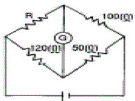
- 60
- 80
- 120
- 240
(정답률: 72%)
80. 항공기에서 거리측정장치(DME)의 기능을 가장 올바르게 설명한 내용은?
- 질문펄스에서 응답펄스에 대한 펄스간에 지체시간을 구하여 방위를 측정할 수 있다.
- 질문펄스에서 응답펄스에 대한 펄스간에 지체시간을 구하여 거리를 측정할 수 있다.
- 응답펄스에서 질문펄스에 대한 시간차를 구하여 방위를 측정할 수 있다.
- 응답펄스에서 선택된 주파수만을 계산하여 거리를 측정할 수 있다.
(정답률: 77%)
원심력 = 무게 × 중력가속도 × 원심가속도 비율
여기서 중력가속도는 지구에서의 중력가속도인 9.8 m/s^2이고, 원심가속도 비율은 다음과 같이 계산할 수 있습니다.
원심가속도 비율 = cos(60°) = 0.5
따라서 원심력은 다음과 같이 계산할 수 있습니다.
원심력 = 6,000 × 9.8 × 0.5 = 29,400 N
여기서 kgf로 변환하면 다음과 같습니다.
29,400 N ÷ 9.8 m/s^2 ÷ 1,000 = 3 kgf
하지만 문제에서는 단위를 kgf로 주어졌으므로, 이 값을 그대로 사용합니다.
따라서 원심력은 3 × 3,464 = 10,392 kgf가 됩니다.